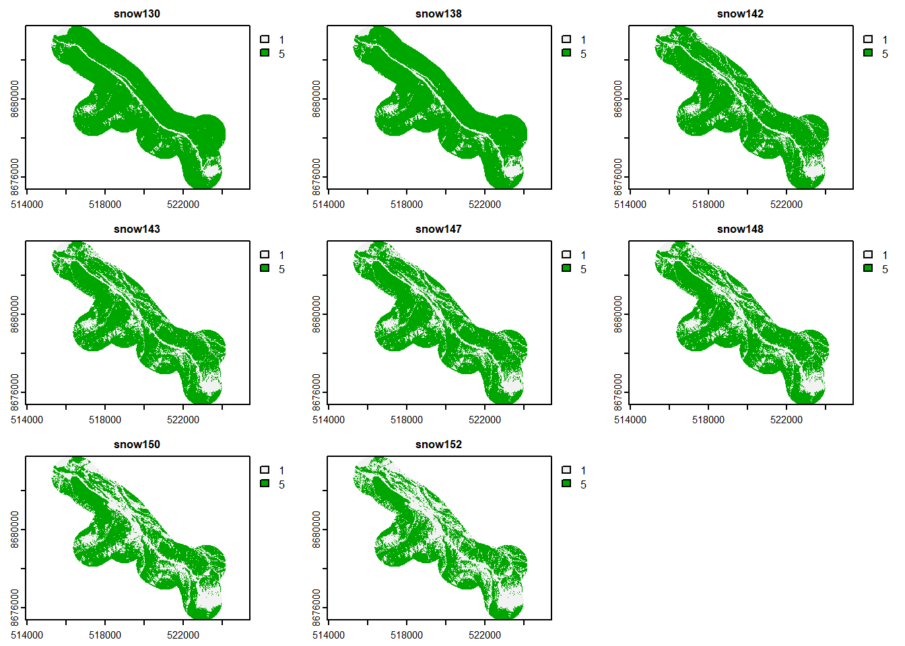

2 Satellite snow cover map
This script loads the classified satellite raster images and merges them into one stack where each stacked layer indicates which areas became free from snow since the last date
2.1 Produce a single rasterstack for new snow-free areas in each stack
This is script cleans the classified snow/no snow satellite rasters and stacks them into a single file I made a “manual loop” where I repeated the same chunk of code for each layer. Please don’t judge. :)
# Load the classified snow - no snow satellite images, only select the layer that has the snow data (layer 6)
sn0510 = rast("raster_input/d_20190510_fin.tif")
sn0510<-sn0510[[6]]
sn0522 = rast("raster_input/d_20190522_fin.tif")
sn0522<-sn0522[[6]]
sn0523 = rast("raster_input/d_20190523_fin.tif")
sn0523<-sn0523[[6]]
sn0527 = rast("raster_input/d_20190527_fin.tif")
sn0527<-sn0527[[6]]
sn0528 = rast("raster_input/d_20190528_fin.tif")
sn0528<-sn0528[[6]]
sn0601 = rast("raster_input/d_20190601_fin.tif")
sn0601<-sn0601[[6]]
# This is a procedure to label each raster layer with the area that is newly snow-free
# Reclassify the first layer (1 snow, 5 snow-free)
sn0510_re <- classify(sn0510, cbind(NA, 1))
sn0510_re <- classify(sn0510_re, cbind(0, 5))
# Rename the first layer
sn1<-sn0510_re
#reclassify new layer
sn_re <- classify(sn0522, cbind(NA, 1))
# start repeated chunk
# reclassify the snow/snow free layers to make different from the one above
# 10 for snow, 20 for snowfree
sn_re <- classify(sn_re, cbind(0, 10))
sn_re <- classify(sn_re, cbind(1, 20))
# add the previous layer to the new one
sn<-sn_re+sn1
# reclassify the added layer, all areas that had had snow but are newly free of snow get the label 5, all other 1
m <- c(11, 1,
15, 5,
21, 1,
25, 1)
rclmat <- matrix(m, ncol=2, byrow=TRUE)
sn1 <- classify(sn, rclmat, include.lowest=TRUE)
# --- end of chunk
#rename the new layer to keep it
sn0522_x<-sn1
#reclassify the next new layer, and then repeat the chunk
sn_re <- classify(sn0523, cbind(NA, 1))
# start repeated chunk
# reclassify the snow/snow free layers to make different from the one above
# 10 for snow, 20 for snowfree
sn_re <- classify(sn_re, cbind(0, 10))
sn_re <- classify(sn_re, cbind(1, 20))
# add the previous layer to the new one
sn<-sn_re+sn1
# reclassify the added layer, all areas that had had snow but are newly free of snow get the label 5, all other 1
m <- c(11, 1,
15, 5,
21, 1,
25, 1)
rclmat <- matrix(m, ncol=2, byrow=TRUE)
sn1 <- classify(sn, rclmat, include.lowest=TRUE)
# --- end of chunk
#rename
sn0523_x<-sn1
#reclassify new layer
sn_re <- classify(sn0527, cbind(NA, 1))
# start repeated chunk
# reclassify the snow/snow free layers to make different from the one above
# 10 for snow, 20 for snowfree
sn_re <- classify(sn_re, cbind(0, 10))
sn_re <- classify(sn_re, cbind(1, 20))
# add the previous layer to the new one
sn<-sn_re+sn1
# reclassify the added layer, all areas that had had snow but are newly free of snow get the label 5, all other 1
m <- c(11, 1,
15, 5,
21, 1,
25, 1)
rclmat <- matrix(m, ncol=2, byrow=TRUE)
sn1 <- classify(sn, rclmat, include.lowest=TRUE)
# --- end of chunk
#rename
sn0527_x<-sn1
#reclassify new layer
sn_re <- classify(sn0528, cbind(NA, 1))
# start repeated chunk
# reclassify the snow/snow free layers to make different from the one above
# 10 for snow, 20 for snowfree
sn_re <- classify(sn_re, cbind(0, 10))
sn_re <- classify(sn_re, cbind(1, 20))
# add the previous layer to the new one
sn<-sn_re+sn1
# reclassify the added layer, all areas that had had snow but are newly free of snow get the label 5, all other 1
m <- c(11, 1,
15, 5,
21, 1,
25, 1)
rclmat <- matrix(m, ncol=2, byrow=TRUE)
sn1 <- classify(sn, rclmat, include.lowest=TRUE)
# --- end of chunk
#rename
sn0528_x<-sn1
#reclassify new layer
sn_re <- classify(sn0601, cbind(NA, 1))
# start repeated chunk
# reclassify the snow/snow free layers to make different from the one above
# 10 for snow, 20 for snowfree
sn_re <- classify(sn_re, cbind(0, 10))
sn_re <- classify(sn_re, cbind(1, 20))
# add the previous layer to the new one
sn<-sn_re+sn1
# reclassify the added layer, all areas that had had snow but are newly free of snow get the label 5, all other 1
m <- c(11, 1,
15, 5,
21, 1,
25, 1)
rclmat <- matrix(m, ncol=2, byrow=TRUE)
sn1 <- classify(sn, rclmat, include.lowest=TRUE)
# --- end of chunk
#rename
sn0601_x<-sn1
# add all the reclassified layers together into 1 raster stack
sn6<-c(sn0510_re, sn0522_x, sn0523_x, sn0527_x, sn0528_x, sn0601_x)
# load the extent of the study area
sat_extent= read_sf("datafiles/goose_survey_1000.shp")
# crop the snow raster to the study extent
sn6_crop=crop(sn6, vect(sat_extent))
sn6_crop=mask(sn6_crop, vect(sat_extent))
names(sn6_crop)<-c('snow130', 'snow142', 'snow143', 'snow147', 'snow148', 'snow152')2.2 Make snow cover maps for dates where there was a timegaps in the data
# Calculate the snow extent for the 30th of May
#load rasters and reclassify (early date the vegetation is labelled 1, the late date, snow gets labelled 1)
sn28 <- classify(sn6_crop$snow148, cbind(5, NA))
sn01 <- classify(sn6_crop$snow152, cbind(1, NA))
sn01 <- classify(sn01, cbind(5, 1))
#calculate distance to vegetation edge for the early data and snow edge for the late date
sn28_dist <- distance(sn28)
sn01_dist <- distance(sn01)
# Rename
sn01x<-sn01_dist
sn28x<-sn28_dist
#Find the areas that are in the middle of the vegetation buffer of the early date and the snow buffer of the late day
# this is to estimate the snow cover for the date between
sn01x[sn01x < sn28x] <- 500
m <- c(0, 498, 0,
498, 501, 1)
rclmat <- matrix(m, ncol=3, byrow=TRUE)
sn01x <- classify(sn01x, rclmat, include.lowest=TRUE)
# reclassify the late date layer
sn01y <- classify(sn6_crop$snow152, cbind(5, 0))
# multiply with the late date layer and reclassify to add the interpolated snow cover to the snow cover that is still there during the later date
sn01xy<-sn01y*sn01x
sn30<-sn6_crop$snow152+sn01xy
m <- c(1, 1,
2, 5,
5, 5)
rclmat <- matrix(m, ncol=2, byrow=TRUE)
sn30x <- classify(sn30, rclmat, include.lowest=TRUE)
# Do the same kind of interpolation for the 18th of May
# Reclassify the first layer (1 snow, 5 snow-free)
sn10 <- classify(sn6_crop$snow130, cbind(5, NA))
sn22 <- classify(sn6_crop$snow142, cbind(1, NA))
sn22 <- classify(sn22, cbind(5, 1))
#calculate distance to veg and snow edge
sn10_dist <- distance(sn10)
sn22_dist <- distance(sn22)
sn10x<-sn10_dist
sn22x<-sn22_dist
sn22x[sn22x < sn10x] <- 5500
m <- c(0, 5020, 0,
5020, 5600, 1)
rclmat <- matrix(m, ncol=3, byrow=TRUE)
sn22x <- classify(sn22x, rclmat, include.lowest=TRUE)
sn22y <- classify(sn6_crop$snow142, cbind(5, 0))
sn22xy<-sn22y*sn22x
sn18<-sn6_crop$snow142+sn22xy
m <- c(1, 1,
2, 5,
5, 5)
rclmat <- matrix(m, ncol=2, byrow=TRUE)
sn18x <- classify(sn18, rclmat, include.lowest=TRUE)2.3 Stack the eight rasters into single stack and save outputs
# Stack the new rasters together with the other ones
sn8<-c(sn6_crop$snow130, sn18x, sn6_crop$snow142, sn6_crop$snow143, sn6_crop$snow147, sn6_crop$snow148, sn30x, sn6_crop$snow152)
# Rename the layers in the stack
names(sn8)<-c('snow130','snow138', 'snow142', 'snow143', 'snow147', 'snow148', 'snow150', 'snow152')
# Save the raster or use further in "sat_grubbing_map"
writeRaster(sn8, "raster_output/raster_snow_all8_layers_cleaned_clipped.tif", overwrite=TRUE)
# Make a frequenct table of snowmelt
freqy<-as.data.frame(freq(sn8))
freqy$julian<-c(130,130, 138,138, 142,142,143,143,147,147,148,148,150,150,152,152)
freqy$value<-as.factor(freqy$value)
levels(freqy$value) <- c("snow-free","snow")
write.table(freqy, file = "data_output/satellite_snow_no_snow.txt", append = FALSE, sep = "\t", dec = ".",
row.names = FALSE, col.names = TRUE)
plot(sn8)